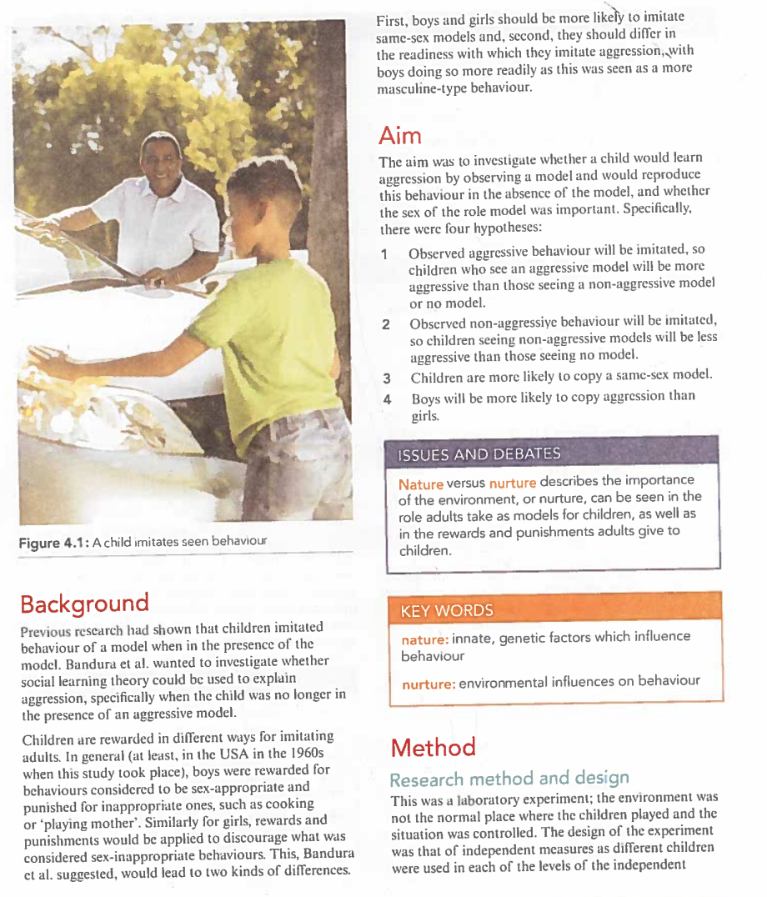
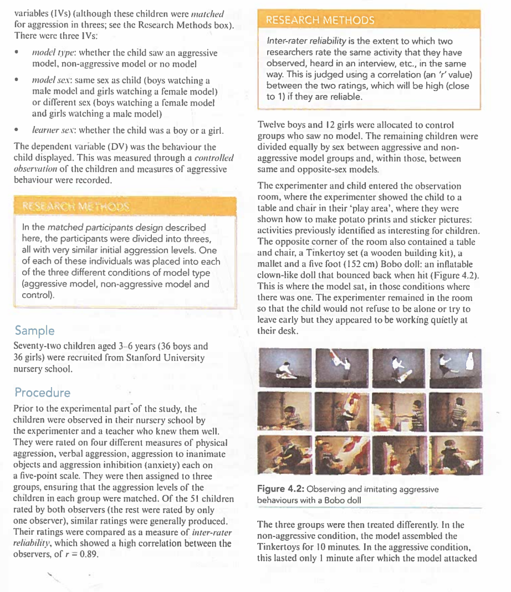
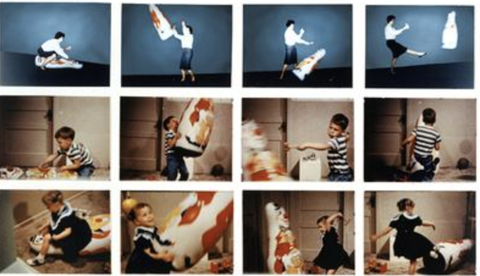

Children copy adults. One reason for this is that the immediate social setting encourages the child to imitate what he or she is watching (Figure 4.1). This influences their behaviour, making it more likely that the child will do what others are doing around them. Alternatively, the observation of a behaviour can lead a child to acquire a new response that he or she could reproduce independently. If this is the case, the new behaviour should generalise（泛化） to new settings and so would be produced in the absence of an adult model（榜样/模型）.
Albert Bandura had previously conducted experiments on social learning（社会学习） and was interested in studying social learning in the context of aggression（攻击性）. To learn from others, the observer (e.g. a child) must be paying attention to the behaviour of a model. They must retain (remember) the behaviour they have observed, in order to reproduce it. When social learning occurs, it could potentially lead to either aggressive or non-aggressive behaviour.
Bandura expected that watching an aggressive model should lead to more aggressive behaviours being demonstrated, and that observing a non-aggressive model should lead to more non-aggressive behaviour being produced — i.e. even less aggressive behaviour than normal.

Previous research had shown that children imitated behaviour of a model when in the presence of the model. Bandura et al. wanted to investigate whether social learning theory（社会学习理论） could be used to explain aggression, specifically when the child was no longer in the presence of an aggressive model.
Children are rewarded in different ways for imitating adults. In general (at least, in the USA in the 1960s when this study took place), boys were rewarded for behaviours considered to be sex-appropriate and punished for inappropriate ones, such as cooking or 'playing mother'. Similarly for girls, rewards and punishments would be applied to discourage what was considered sex-inappropriate behaviours. This, Bandura et al. suggested, would lead to two kinds of differences:
The aim was to investigate whether a child would learn aggression by observing a model and would reproduce this behaviour in the absence of the model, and whether the sex of the role model was important. Specifically, there were four hypotheses:
Nature versus nurture（先天与后天）: The importance of the environment (nurture) can be seen in the role adults take as models for children, as well as in the rewards and punishments adults give to children.
This was a laboratory experiment（实验室实验）; the environment was not the normal place where the children played and the situation was controlled. The design was that of independent measures（独立测量设计） as different children were used in each level of the independent variables (IVs) (although these children were matched for aggression in threes).
There were three IVs:
The dependent variable (DV) was the behaviour the child displayed. This was measured through a controlled observation（控制观察） of the children and measures of aggressive behaviour were recorded.
Matched participants design（匹配参与者设计）: All participants were divided into triplets with very similar initial aggression levels. One individual from each triplet was placed into each of the three conditions (aggressive model, non-aggressive model, and control).
Inter-rater reliability（评分者间信度）: The extent to which two researchers rate the same observed activity in the same way. This is judged using a correlation ('r' value) between the two ratings — high (close to 1) if reliable.
Seventy-two children aged 3–6 years (36 boys and 36 girls) were recruited from Stanford University nursery school.
Prior to the experimental part of the study, the children were observed in their nursery school by the experimenter and a teacher who knew them well. They were rated on four different measures of physical aggression, verbal aggression, aggression to inanimate objects and aggression inhibition (anxiety), each on a five-point scale. They were then assigned to three groups, ensuring that the aggression levels of the children in each group were matched. Of the 51 children rated by both observers (the rest were rated by only one observer), similar ratings were generally produced. Their ratings were compared as a measure of inter-rater reliability（评分者间信度）, which showed a high correlation between the observers, of r = 0.89.
Twelve boys and 12 girls were allocated to control groups who saw no model. The remaining children were divided equally between aggressive and non-aggressive model groups and, within those, between same and opposite-sex models.
The experimenter and child entered the observation room, where the experimenter showed the child to a table and chair — the 'play area' — where they were shown how to make potato prints and sticker pictures: activities previously identified as interesting for children. The opposite corner of the room also contained a table and chair, a Tinkertoy set (a wooden building kit), a mallet and a five-foot (152 cm) Bobo doll: an inflatable clown-like doll that bounced back when hit (Figure 4.2). This is where the model sat, in those conditions where there was one. The experimenter remained in the room so that the child would not refuse to be alone or try to leave early, but they appeared to be working quietly at their desk.


The three groups were then treated differently:
| Condition （条件） | Model's Behaviour （模型行为） | Duration （时长） |
|---|---|---|
| Aggressive Model （攻击模型组） |
The model spent ~1 minute assembling Tinkertoys, then turned to the Bobo doll for a ~9-minute aggressive sequence（攻击序列）: • Hitting the doll with a mallet • Sitting on the doll and punching it in the nose • Throwing the doll into the air and kicking it • Saying aggressive phrases: "Kick him!" "Sock him!" "Hit him down!" "Throw him in the air!" "Pow!" • Also saying non-aggressive comments: "He sure is a tough fella" • Half the children saw a same-sex model, half saw an opposite-sex model |
~10 min total |
| Non-aggressive Model （非攻击模型组） |
The model quietly assembled Tinkertoys for the full 10 minutes, completely ignoring the Bobo doll. • Half saw a same-sex model, half saw an opposite-sex model |
10 min |
| Control Group （对照组） |
No exposure to any adult model — proceeded directly to the test phase. | No exposure |
The non-aggressive model group might appear to be a control group because the key factor of 'aggression' is missing. However, the important aspect is the presence of a model — and in the non-aggressive group a model was still present. This means the real control group is where the IV is absent: the group where there is no model at all.
The experimental procedure continued with a stage in which all participants were deliberately mildly annoyed. This was done for two reasons:
Arousal procedure（唤醒程序）: The experimenter took the child to another room, showed some attractive toys (e.g., nice art supplies), let the child play for about 2 minutes, then told them these toys were reserved for other children and could not be played with — this deliberately created mild frustration（轻度挫折感）.
A test of the child's aggression then followed in which the child was observed for 20 minutes using a one-way mirror（单向镜）. The mirror appeared transparent on the researcher's side (so they could observe the behaviour) but appeared as a normal mirror on the child's side (so they could not see that they were being observed from another room).
For the aggressive model group, there was a test of delayed imitation. The experimental room contained a three-foot (92 cm) Bobo doll, a mallet and peg board, two dart guns and a tether ball with a face painted on it which hung from the ceiling. It also contained some non-aggressive toys, including a tea set, crayons and colouring paper, a ball, two dolls, three bears, cars and trucks, and plastic farm animals. These toys were always presented in the same order.
The children's behaviours were observed in 5-second intervals（5秒间隔） (240 response units per child). There were three 'response measures' of the children's imitation, with a range of possible activities in each:
| Category （类别） | Description（描述） |
|---|---|
| Imitative physical aggression （模仿性身体攻击） | striking the Bobo doll with the mallet, sitting on the doll and punching it in the nose, kicking the doll, and tossing it in the air |
| Imitative verbal aggression （模仿性言语攻击） | repetition of the phrases: 'Sock him', 'Hit him down', 'Kick him', 'Throw him in the air' or 'Pow' |
| Imitative non-aggressive verbal responses （模仿性非攻击言语） | repetition of 'He keeps coming back for more' or 'He sure is a tough fella' |
Partially imitative aggression（部分模仿性攻击） was scored if the child imitated these behaviours incompletely. The two behaviours here were:
Two further categories were:
Finally, behaviour units were also counted for non-aggressive play（非攻击性游戏） and sitting quietly not playing at all（安静坐着不玩耍）, and records were kept of the children's remarks about the situation.
The male model scored all the children's behaviours. Except for those conditions in which the male was the model, he was unaware of which condition the child had been in. However, the condition in which the child had been was usually obvious, as in the case of the aggressive model children as they performed the specific behaviours exhibited by the model. To test the reliability of the scorer, a second scorer independently rated the behaviour of half of the children. The reliability score was high at approximately r = 0.9 for different categories of behaviour.
Children exposed to aggressive models imitated their exact behaviours and were significantly more aggressive, both physically and verbally, than those children in the non-aggressive model or control groups. One-third of the children in the aggressive condition also copied the model's non-aggressive verbal responses but none of the children in either the non-aggressive or control groups made such remarks. The mean aggression scores can be seen in Table 4.1.
The mean for imitative physical aggression（模仿性身体攻击） for boys with a male model (25.8) was much higher than that for girls (7.2). This indicates that the boys imitated the physical model more than the girls did. However, with a female model, girls imitated less (5.5) than with the male model. Girls imitated more verbal aggression of the same-sex model than boys (although not significantly so). Children were also more likely to imitate a same-sex model than an opposite-sex model; this effect was stronger for boys than for girls.
| Response category （反应类别） |
Experimental groups （实验组） |
Control groups （对照组） |
|||
|---|---|---|---|---|---|
| Aggressive （攻击模型） |
Non-aggressive （非攻击模型） |
||||
| Female model （女性模型） |
Male model （男性模型） |
Female model （女性模型） |
Male model （男性模型） |
||
| Imitative physical aggression（模仿性身体攻击） | |||||
| Female participants（女性参与者） | 5.5 | 7.2 | 2.5 | 0.0 | 1.2 |
| Male participants（男性参与者） | 12.4 | 25.8 | 0.2 | 1.5 | 2.0 |
| Imitative verbal aggression（模仿性言语攻击） | |||||
| Female participants（女性参与者） | 13.7 | 2.0 | 0.3 | 0.0 | 0.7 |
| Male participants（男性参与者） | 4.3 | 12.7 | 1.1 | 0.0 | 1.7 |
| Mallet aggression（锤子攻击 — 部分模仿） | |||||
| Female participants（女性参与者） | 17.2 | 18.7 | 0.5 | 0.5 | 13.1 |
| Male participants（男性参与者） | 15.5 | 28.8 | 18.7 | 6.7 | 13.5 |
| Response category （反应类别） |
Experimental groups （实验组） |
Control groups （对照组） |
|||
|---|---|---|---|---|---|
| Aggressive （攻击模型） |
Non-aggressive （非攻击模型） |
||||
| Female model （女性模型） |
Male model （男性模型） |
Female model （女性模型） |
Male model （男性模型） |
||
| Punches Bobo doll（拳击波波娃娃 — 部分模仿） | |||||
| Female participants（女性参与者） | 6.3 | 16.5 | 5.8 | 4.3 | 11.7 |
| Male participants（男性参与者） | 18.9 | 11.9 | 15.6 | 14.8 | 15.7 |
| Non-imitative aggression（非模仿性攻击） | |||||
| Female participants（女性参与者） | 21.3 | 8.4 | 7.2 | 1.4 | 6.1 |
| Male participants（男性参与者） | 16.2 | 36.7 | 26.1 | 22.3 | 24.6 |
| Aggressive gun play（攻击性枪械游戏） | |||||
| Female participants（女性参与者） | 1.8 | 4.5 | 2.6 | 2.5 | 3.7 |
| Male participants（男性参与者） | 7.3 | 15.9 | 8.9 | 16.7 | 14.3 |
Table 4.1: Mean aggression scores from Bandura et al.'s study
Figure: Mean imitative physical aggression scores across conditions（各条件下模仿性身体攻击平均得分对比）
| Hypothesis （假设） | Prediction （预测） | Finding （发现） | Supported? （支持？） |
|---|---|---|---|
| H1 | Children exposed to aggressive models will imitate aggressive behaviour | Aggressive model group showed significantly higher imitative physical & verbal aggression than both non-aggressive and control groups (χ² = 27.17, p < .001 for physical; χ² = 9.17, p < .02 for verbal) | ✅ Yes |
| H2 | Non-aggressive model → less aggression than no-model control | Non-aggressive group sat quietly >2× longer than aggressive group (t = 3.07, p < .01); played more with dolls | ✅ Partially |
| H3 | Same-sex model copied more | Boys imitated male model more (25.8 vs 12.4 physical); girls imitated female model more verbally (13.7 vs 2.0) | ✅ Yes |
| H4 | Boys more aggressive than girls | Boys produced significantly more imitative physical aggression than girls (t = 2.50, p < .01) | ✅ Yes |
In addition to the observations, records of the remarks about the aggressive models revealed differences, both between reactions to the actions of the male and female models and between boys and girls. Some comments appeared to be based on previous knowledge of sex-typed behaviour（性别定型行为）:
"Who is that lady? That's not the way for a lady to behave. Ladies are supposed to act like ladies..."
"You should have seen what that girl did in there. She was just acting like a man. I never saw a girl act like that before."
"Al's a good socker, he beat up Bobo. I want to sock like Al."
"That man is a strong fighter, he punched and punched and he could hit Bobo right down to the floor... He's a good fighter like Daddy."
sex-typed behaviour（性别定型行为）: actions that are typically performed by one particular sex and are seen in society as more appropriate for that sex. For example, aggression is seen as masculine-type behaviour and was more commonly imitated by boys in the study.
The results strongly suggest that observation and imitation can account for the learning of specific acts without reinforcement（无需强化即可通过观察和模仿学习特定行为） of either the model or observer. All four hypotheses were supported:
extraneous variable（无关变量/外扰变量）: a variable other than the IV that may affect the DV. It either acts randomly (affecting the DV across all levels of the IV) or systematically (affecting only one level, in which case it is called a confounding variable), potentially obscuring the effect of the IV and making results difficult to interpret.
One ethical issue with the study was that some of the children might have been harmed by becoming more aggressive during the research. For example, they could have physically injured themselves with the toys they were given to play with after watching an aggressive model. Even if this were not the case, the children were still deliberately annoyed in the procedure of the study. This could have been psychologically distressing for the children. These aspects of the study go against the ethical guideline of protecting participants from physical and psychological harm.
It is worth noting that this study was conducted in 1961, before modern ethical guidelines (such as informed consent, right to withdraw, etc.) were fully established. If this experiment were repeated today, it would require parental informed consent（知情同意）, ensure children had the right to withdraw at any time, and provide thorough psychological debriefing（事后解释） afterwards to eliminate any potential negative effects.
In the nature versus nurture debate, we can consider why the boys and girls showed different responses. This could be because they are genetically different — a nature explanation（先天解释）. Boys might be biologically predisposed to be aggressive, so more likely to copy aggressive models. Alternatively, boys might be more likely to copy aggressive models because they have been rewarded for aggressive behaviours more than girls have. This would be a nurture argument（后天论点）.
Bandura's position: This study primarily supports a nurture（后天） explanation — because children learned entirely novel（新颖的）aggressive responses that could not have been innate. However, Bandura also acknowledged that the degree of sex-typing in behaviour influences imitation tendency (sex-typed behaviour is more readily imitated from same-sex models), indicating that nature and nurture factors interact.
The study revealed an interesting Sex × Model interaction（性别×模型交互作用）:
This means predictions must consider the degree of sex-typing（性别定型程度） of the behaviour — not all behaviours follow the same pattern of imitation.
The findings suggest practical applications for protecting children, e.g. through film certification（电影分级制度） and the use of parental controls on media devices（媒体设备的家长控制）. If children can learn aggression simply by watching a model on TV or in video games, then limiting exposure to violent media becomes an important public health intervention.
At the same time, the findings from the non-aggressive model group have positive implications: demonstrating prosocial（亲社会的）and non-aggressive behaviour can also be imitated by children. This provides a basis for positively applying social learning theory — by showing cooperation, sharing, and non-violent conflict resolution through media, we can help children learn these social skills.
Bandura et al.'s study used adults being aggressive to a Bobo doll to show that children's behaviour can be affected by the behaviour of a model. Exact aggressive behaviours were imitated although the study showed that non-aggressive modelling was also effective. Children were more likely to copy a same-sex model. Additionally, boys engaged in more aggressive imitation than girls. This was a well-controlled laboratory experiment measuring the dependent variable through objective observations that were reliable. Qualitative data suggested that the children recognised sex-typing（性别定型） and were surprised by behaviour that did not fit the pattern. The findings suggest practical applications for protecting children, e.g. through film certification and the use of parental controls on media devices.
Q1. Why might Bandura et al. have chosen to record the children's behaviour in 5-second intervals, rather than 1-second or 1-minute intervals?
Q2. Consider the data for the mean aggressive behaviours and the non-imitative verbal responses.
Q3. The procedure was standardised in many ways.
© CIE Psychology — Learning Approach Core Study 1 | Generated from Cambridge International AS & A Level Psychology Coursebook